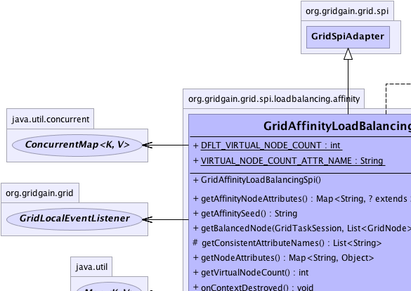
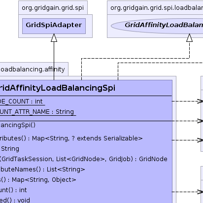
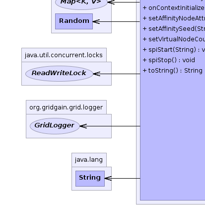
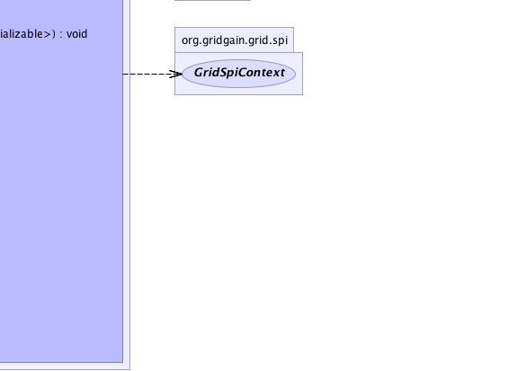

org.gridgain.grid.spi.GridSpiAdapter
org.gridgain.grid.spi.loadbalancing.affinity.GridAffinityLoadBalancingSpi
org.gridgain.grid.spi.GridSpiAdapter
org.gridgain.grid.spi.loadbalancing.affinity.GridAffinityLoadBalancingSpi
|
GridGain™ 3.1.1c
Community Edition |
|||||||||
| PREV CLASS NEXT CLASS | FRAMES NO FRAMES | |||||||||
| SUMMARY: NESTED | FIELD | CONSTR | METHOD | DETAIL: FIELD | CONSTR | METHOD | |||||||||
java.lang.Object
@GridSpiInfo(author="GridGain Systems, Inc.",
url="www.gridgain.com",
email="support@gridgain.com",
version="3.1.1c.05062011")
@GridSpiMultipleInstancesSupport(value=true)
public class GridAffinityLoadBalancingSpiLoad balancing SPI which uses data affinity for routing jobs to remote nodes. It provides ability to collocate computations with data. This SPI is best used with distributed caches for which it is really important that computation is routed exactly to the node on which data is cached. Many data cache schemes can take advantage of this SPI, distributed, or invalidation based. The real value is that you now can partition your database between data servers and hence load the whole database into memory for faster access.
On the right hand side, you can see the value that GridGain brings to the picture. The whole computation logic together with data access logic is brought to data server for local execution. Assuming that serialization of computation logic is much lighter than serializing data, the network traffic in this case is minimal. Also, your computation may access data from both, Node 2 and Node 3. In this case, GridGain will split your computation into logical jobs and route appropriate logical jobs to the corresponding data servers to ensure that all computations still remain local. Now, if one of the data server nodes crashes, your jobs will be automatically failed-over to other nodes, which allows you to fail-over logic together with data (not just data fail-over provided by data grids or distributed caches).

GridTask.map(List, Object)
implementation use load balancer to find out the node this job should be routed to
(see GridLoadBalancerResource documentation for information on how a load balancer
can be injected into your task. However, the preferred way here is to use
GridTaskSplitAdapter, as it will handle affinity assignment of jobs to nodes
automatically. Node that when working with affinity load balancing, your task's
map(..) or split(..) methods should return GridAffinityJob instances
instead of GridJob ones. GridAffinityJob adds one additional
method to grid job: GridAffinityJob.getAffinityKey() which will allow GridGain to
properly route the job with the same key to the same grid node every time. In case if regular
GridJob is returned, not the GridAffinityJob, it will be routed to a randomly
picked node.
Here is an example of a grid task that uses affinity load balancing. Note how load balancing
jobs is absolutely transparent to the user and is simply a matter of proper grid configuration.
public class MyFooBarAffinityTask extends GridTaskSplitAdapter<List<Integer>,Object> {
// For this example we receive a list of cache keys and for every key
// create a job that accesses it.
@Override
protected Collection<? extends GridJob> split(int gridSize, List<Integer> cacheKeys) throws GridException {
List<MyGridAffinityJob> jobs = new ArrayList<MyGridAffinityJob>(gridSize);
for (Integer cacheKey : cacheKeys) {
jobs.add(new MyGridAffinityJob(cacheKey));
}
// Node assignment via load balancer
// happens automatically.
return jobs;
}
...
}
Here is the example of grid jobs created by the task above:
public class MyGridAffinityJob extends GridAffinityJobAdapter<Integer, Serializable> {
public MyGridAffinityJob(Integer cacheKey) {
// Pass cache key as a job argument.
super(cacheKey);
}
public Serializable execute() throws GridException {
...
// Access data by the same key returned
// in 'getAffinityKey()' method.
mycache.get(getAffinityKey());
...
}
}
Also note that there may be cases where your underlying cache product supports multiple
caches and you need to cache data with identical keys on those caches. Although, it still
may be OK to return the same key from GridAffinityJob.getAffinityKey() method
for either cache, you may wish to change your affinity key method as follows to make
sure that affinity load balancing for one cache is independent from another:
public class MyFooBarAffinityJob extends GridAffinityJobAdapter<String, Integer> {
public MyFooBarAffinity(String cacheName, Integer cacheKey) {
// Construct affinity key by concatenating cache name
// and affinity key. Note that we also pass cacheKey as
// argument to access from execute method.
super(cacheName + '.' + cacheKey, cacheKey);
}
@Override
pubic Serializable execute() {
...
// Access data from your cache by the cache key.
// The main point to note here is that the same
// affinity key always corresponds to the same
// cache key.
Integer cacheKey = argument();
Object data = someCache.get(cacheKey);
...
// Do computations.
}
}
GridAffinityLoadBalancingSpi.setVirtualNodeCount(int)).GridAffinityLoadBalancingSpi.setAffinityNodeAttributes(Map)).GridAffinityLoadBalancingSpi.setAffinitySeed(String)).GridAffinityLoadBalancingSpi.setVirtualNodeCount(int)). The larger the virtual node count, the more
even the data distribution is across nodes. For best affinity distribution the value
should usually be larger than 500. The default value of 1000
is good enough for most grid deployments. If you set the value
too large (larger than several thousands), it may cause performance degradation.
Consistent Hashing algorithm generally yields between
2% and 4% standard deviation for equal data affinity distribution.
You can use virtual node count to distribute load in uneven grid. Since the larger the virtual node count is, the more data will be stored on that node (which leads to more jobs sent to that node), nodes that have higher Memory or CPU capacity should have larger virtual node count value.
When configuring virtual node count, it is common to assign a certain number of virtual
nodes to a single unit of capacity characteristic. For example, if you have 3 nodes in
the grid: N1, N2, and N3, and nodes N1 and N2 have 2GB of memory and node N3 has 3GB of memory,
then, to ease up calculations, for every 1GB of memory on a node you could assign 500 virtual nodes.
As a result, nodes N1 and N2 should be assigned 1000 virtual nodes and node N3 should
be assigned 1500 virtual nodes.
Below is a Java example of configuration for Affinity load balancing SPI: GridAffinityLoadBalancingSpi spi = new GridAffinityLoadBalancingSpi();
GridAffinityLoadBalancingSpi spi = new GridAffinityLoadBalancingSpi(); // Change number of virtual nodes. spi.setVirtualNodeCount(1500); GridConfigurationAdapter cfg = new GridConfigurationAdapter(); // Override default load balancing SPI. cfg.setLoadBalancingSpi(spi); // Starts grid. G.start(cfg);Here is Spring XML configuration example:
<property name="loadBalancingSpi">
<bean class="org.gridgain.grid.spi.loadBalancing.affinity.GridAffinityLoadBalancingSpi">
<property name="virtualNodeCount" value="1500"/>
<!--
If your grid is segmented via node attributes,
then provide all attributes a node should have
in order to be considered by affinity load balancer.
-->
<property name="affinityNodeAttributes">
<map>
<entry key="node.segment" value="foobar"/>
</map>
</property>
</bean>
</property>
The implementation utilizes Consistent Hashing algorithm that is best documented in Tom White's Blog (we modified the algorithm to fit better into GridGain).

For information about Spring framework visit www.springframework.org
| Wiki | |
| Forum |
|  |  |
|  |  |
| Field Summary | |
|---|---|
static int |
DFLT_VIRTUAL_NODE_COUNT
Default virtual node count for Consistent Hashing algorithm (value is 1000). |
static String |
VIRTUAL_NODE_COUNT_ATTR_NAME
Name of node attribute to specify number of replicas for a node. |
| Constructor Summary | |
|---|---|
GridAffinityLoadBalancingSpi()
|
|
| Method Summary | |
|---|---|
Map<String,? extends Serializable> |
getAffinityNodeAttributes()
Gets map of node attributes for nodes that should participate in affinity assignment. |
String |
getAffinitySeed()
Gets affinity seed used by Consistent Hashing algorithm. |
GridNode |
getBalancedNode(GridTaskSession ses,
List<GridNode> top,
GridJob job)
Gets balanced node for specified job within given task session. |
protected List<String> |
getConsistentAttributeNames()
Returns back a list of attributes that should be consistent for this SPI. |
Map<String,Object> |
getNodeAttributes()
This method is called before SPI starts (before method GridSpi.spiStart(String)
is called). |
int |
getVirtualNodeCount()
Gets number of virtual nodes for Consistent Hashing algorithm. |
void |
onContextDestroyed()
Callback invoked prior to stopping grid before SPI context is destroyed. |
void |
onContextInitialized(GridSpiContext spiCtx)
Callback invoked when SPI context is initialized. |
void |
setAffinityNodeAttributes(Map<String,? extends Serializable> affAttrs)
Sets node attributes for data affinity grid segment. |
void |
setAffinitySeed(String affSeed)
Sets affinity seed used by Consistent Hashing algorithm. |
void |
setVirtualNodeCount(int virtualNodeCnt)
Sets number of virtual nodes for Consistent Hashing algorithm. |
void |
spiStart(String gridName)
This method is called to start SPI. |
void |
spiStop()
This method is called to stop SPI. |
String |
toString()
|
| Methods inherited from class org.gridgain.grid.spi.GridSpiAdapter |
|---|
assertParameter, configInfo, createSpiAttributeName, getAuthor, getGridGainHome, getLocalNodeId, getName, getSpiContext, getStartTimestamp, getStartTimestampFormatted, getUpTime, getUpTimeFormatted, getVendorEmail, getVendorUrl, getVersion, injectables, registerMBean, setJson, setName, startInfo, startStopwatch, stopInfo, unregisterMBean |
| Methods inherited from class java.lang.Object |
|---|
clone, equals, finalize, getClass, hashCode, notify, notifyAll, wait, wait, wait |
| Methods inherited from interface org.gridgain.grid.spi.GridSpi |
|---|
getName |
| Methods inherited from interface org.gridgain.grid.spi.GridSpiJsonConfigurable |
|---|
setJson |
| Methods inherited from interface org.gridgain.grid.spi.GridSpiManagementMBean |
|---|
getAuthor, getGridGainHome, getLocalNodeId, getName, getStartTimestamp, getStartTimestampFormatted, getUpTime, getUpTimeFormatted, getVendorEmail, getVendorUrl, getVersion |
| Field Detail |
|---|
public static final int DFLT_VIRTUAL_NODE_COUNT
1000).
public static final String VIRTUAL_NODE_COUNT_ATTR_NAME
| Constructor Detail |
|---|
public GridAffinityLoadBalancingSpi()
| Method Detail |
|---|
public int getVirtualNodeCount()
getVirtualNodeCount in interface GridAffinityLoadBalancingSpiMBean@GridSpiConfiguration(optional=true) public void setVirtualNodeCount(int virtualNodeCnt)
500. The default value of 1000
is good enough for most grid deployments. Consistent Hashing generally yields between
2% and 4% standard deviation for equal data affinity distribution. If you set the value
too large (larger than several thousands), it may cause performance degradation
You can use virtual node count to distribute load in uneven grid. The larger the virtual node count is, the more data will be stored on that node which leads to more jobs sent to that node. Hence, nodes that have higher Memory or CPU capacity should have larger virtual node count value.
For example, if you have 3 nodes in the grid: N1, N2, and N3, and nodes N1 and N2 have 2GB of
memory and node N3 has 3GB of memory, then, to ease up calculations, for every 1GB of memory
on a node you could assign 500 virtual nodes. As a result, nodes N1 and N2 should be assigned
1000 virtual nodes and node N3 should be assigned 1500 virtual nodes.
virtualNodeCnt - Weight of the node.public Map<String,? extends Serializable> getAffinityNodeAttributes()
Default value is null which means all nodes will be added.
getAffinityNodeAttributes in interface GridAffinityLoadBalancingSpiMBean@GridSpiConfiguration(optional=true) public void setAffinityNodeAttributes(Map<String,? extends Serializable> affAttrs)
Default value is null, which means that all nodes will
be included.
affAttrs - Map of node attributes for affinity load balancing.public Map<String,Object> getNodeAttributes() throws GridSpiException
GridSpi.spiStart(String)
is called). It allows SPI implementation to add attributes to a local
node. Kernel collects these attributes from all SPI implementations
loaded up and then passes it to discovery SPI so that they can be
exchanged with other nodes.
getNodeAttributes in interface GridSpigetNodeAttributes in class GridSpiAdapterGridSpiException - Throws in case of any error.
public String getAffinitySeed()
Whenever starting multiple instances of this SPI, you should make sure that every instance has a different seed to achieve different affinity assignment. Otherwise, affinity assignment for different instances of this SPI will be identical, which defeats the purpose of starting multiple affinity load balancing SPI's altogether.
Note that affinity seed must be identical for corresponding instances of this SPI on all nodes. If this is not the case, then different nodes will calculate affinity differently which may result in multiple nodes responsible for the same affinity key.
getAffinitySeed in interface GridAffinityLoadBalancingSpiMBeanpublic void setAffinitySeed(String affSeed)
Whenever starting multiple instances of this SPI, you should make sure that every instance has a different seed to achieve different affinity assignment. Otherwise, affinity assignment for different instances of this SPI will be identical, which defeats the purpose of starting multiple affinity load balancing SPI's altogether.
Note that affinity seed must be identical for corresponding instances of this SPI on all nodes. If this is not the case, then different nodes will calculate affinity differently which may result in multiple nodes responsible for the same affinity key.
affSeed - Non-null value for affinity seed.
public void spiStart(@Nullable
String gridName)
throws GridSpiException
spiStart in interface GridSpiGridSpiException - Throws in case of any error during SPI start.gridName - Name of grid instance this SPI is being started for
(null for default grid).
public void spiStop()
throws GridSpiException
Note that this method can be called at any point including during recovery of failed start. It should make no assumptions on what state SPI will be in when this method is called.
spiStop in interface GridSpiGridSpiException - Thrown in case of any error during SPI stop.
public void onContextInitialized(GridSpiContext spiCtx)
throws GridSpiException
This method is invoked after GridSpi.spiStart(String) method is
completed, so SPI should be fully functional at this point. Use this
method for post-start initialization, such as subscribing a discovery
listener, sending a message to remote node, etc...
onContextInitialized in interface GridSpionContextInitialized in class GridSpiAdapterGridSpiException - If context initialization failed (grid will be stopped).spiCtx - Spi context.public void onContextDestroyed()
If GridSpiAdapter is used for SPI implementation, then it will
replace actual context with dummy no-op context which is usually good-enough
since grid is about to shut down.
onContextDestroyed in interface GridSpionContextDestroyed in class GridSpiAdapter
public GridNode getBalancedNode(GridTaskSession ses,
List<GridNode> top,
GridJob job)
throws GridException
getBalancedNode in interface GridLoadBalancingSpiGridException - If failed to get next balanced node.ses - Grid task session for currently executing task.top - Topology of task nodes from which to pick the best balanced node for given job.job - Job for which to pick the best balanced node.
protected List<String> getConsistentAttributeNames()
getConsistentAttributeNames in class GridSpiAdapterpublic String toString()
toString in class Object
|
GridGain™ 3.1.1c
Community Edition |
|||||||||
| PREV CLASS NEXT CLASS | FRAMES NO FRAMES | |||||||||
| SUMMARY: NESTED | FIELD | CONSTR | METHOD | DETAIL: FIELD | CONSTR | METHOD | |||||||||
|
GridGain = High Performance Cloud Computing
|
|

|
|